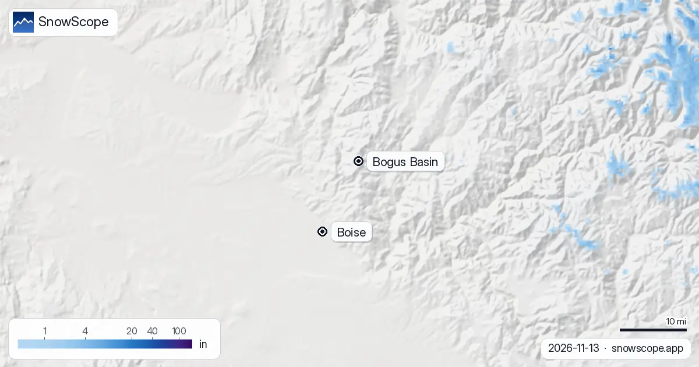

Bogus Basin, la neige : encore à nu, un week-end humide, plus froid la semaine prochaine (13 novembre 2026)
La montagne de Boise est encore brune. Sur notre carte de neige, Bogus Basin n'a aucune neige au sol, ni en bas (5,800 ft), ni à mi-pente (6,700 ft), ni au sommet (7,600 ft). La perturbation de ce week-end est douce : de la pluie au chalet et de la neige mouillée seulement près du sommet. La bonne nouvelle arrive plus tard dans la semaine, quand l'air froid fait descendre la limite pluie-neige vers 5,000 ft.
Consultez les prévisions neige en temps réel pour Bogus Basin sur l'application SnowScopeHauteurs de neige, alertes poudreuse et carte 3D, gratuitement.
Où en est la montagne
Bogus Basin est le domaine à but non lucratif où Boise monte skier après le travail : sur notre cartographie, 37 mi (59 km) de pistes et 11 remontées sur environ 1,800 ft de dénivelé, et il est connu pour son ski de nuit. Aujourd'hui, il n'y a rien à skier. La semaine passée a été sèche aux trois altitudes, et sur la carte le blanc le plus proche est loin au nord-est, dans les montagnes plus hautes du centre de l'Idaho.
C'est environ une semaine de retard sur le calendrier habituel. Au milieu de nos 46 hivers passés (1980-81 à 2025-26), la première neige durable arrive au sommet vers le 3 novembre, à mi-pente vers le 5 novembre et en bas vers le 8 novembre.
Ce week-end : pluie au chalet, neige mouillée en haut
La perturbation qui touche le sud-ouest de l'Idaho ce week-end arrive avec de l'air doux. La limite pluie-neige se tient entre environ 6,300 et 6,800 ft, en plein milieu du domaine. En bas, environ les trois quarts de ce qui tombe devraient être de la pluie. La mi-pente est sur la limite, avec pluie et neige mêlées. Seul le sommet blanchit : environ 2 in (4 cm) selon nos chiffres.
Donc non, ce week-end n'ouvrira pas la saison. Il mouillera le sol, ce qui n'est pas inutile : la neige suivante tient plus vite sur une terre froide et humide que sur une terre sèche.

La semaine prochaine : la limite descend
Après le week-end, l'air froid suit. Sur les sept jours, la limite pluie-neige descend vers 5,000 à 5,100 ft, sous le bas du domaine : les averses suivantes tombent en neige partout sur la montagne. Nos totaux pour la semaine : 3,5 in (9 cm) en bas, 6 in (16 cm) à mi-pente et 8 in (21 cm) au sommet. Les autres prévisions que nous vérifions vont plus haut, de 8 à 15 in au sommet ; notre chiffre est donc du côté prudent.
Huit pouces ne font pas une sous-couche. Un mois de novembre habituel porte 7 in (17 cm) au sommet, 6 in (14 cm) à mi-pente et 4 in (9 cm) en bas ; un novembre sur dix, il y a 24 in (62 cm) en haut, un autre sur dix rien du tout. Bogus Basin prend vraiment vie en décembre, quand un hiver moyen donne 41 in (104 cm) au sommet, 35 in (89 cm) à mi-pente et 22 in (56 cm) en bas.
Après l'hiver le plus maigre de nos archives
Les habitués se souviennent de la saison passée. Dans nos archives, 2025-26 a été le plus maigre des 46 hivers à toutes les altitudes : le sommet a culminé à 27 in (68 cm), le bas à 13 in (33 cm), et le sommet a eu de la neige 105 jours contre 154 d'habitude.
Un mauvais hiver ne dit rien du suivant ; le graphique ci-dessous montre combien l'écart est grand d'une année à l'autre. Ce qu'il dit, c'est que la date de départ des remontées compte plus que d'habitude cette année : surveillez la limite pluie-neige plus que les totaux.
Conseils aux skieurs
- La date d'ouverture, c'est le domaine qui la décide : suivez le bulletin neige et les annonces sur le site de Bogus Basin.
- La route depuis Boise monte vite et devient verglacée avant que la ville ne voie de la neige ; prenez des chaînes ou des pneus neige dès que le froid arrive.
- La neige de début de saison sur la terre cache cailloux et souches : attendez les pistes damées, et lisez les bulletins d'avalanche avant le hors-piste.
Autres cartes (sites externes)
Références et crédits
- Bogus Basin Mountain Recreation Area, site officiel (bulletin neige, ouverture, ski de nuit) bogusbasin.org/
- avalanche.org, centres et bulletins d'avalanche des États-Unis avalanche.org/
À propos de ces chiffres
Chiffres de neige : le modèle de neige SnowScope, calcul du 12 novembre 2026, à trois altitudes du domaine (valeurs pour la zone, pas la perche à neige du domaine), et notre historique de neige, 46 hivers passés (1980-81 à 2025-26), un modèle du passé corrigé de l'altitude. Les pouces et les pieds sont arrondis depuis les valeurs métriques. Limite pluie-neige, part de pluie et fourchette de comparaison : des prévisions météo indépendantes et la prévision officielle américaine lues aux mêmes altitudes, le contrôle que passe chaque article SnowScope avant publication. Longueur des pistes et nombre de remontées : cartographie OpenSkiMap. Les prévisions changent : regardez la carte avant de partir.
Bulletins d'avalanche officiels: avalanche.org (US national portal)
Citer ce bulletin
Pour la recherche, l'enseignement ou la presse : chiffres et graphiques réutilisables librement sous CC BY 4.0 avec cette citation.
SnowScope (2026), Bogus Basin, la neige : encore à nu, un week-end humide, plus froid la semaine prochaine (13 novembre 2026), https://snowscope.app/blog/fr/2026/11/bogus-basin-snow-boise-13-november-2026.html, consulté le 2026-11-13
SnowScope (Atlas Labs). (2026, November 13). Bogus Basin, la neige : encore à nu, un week-end humide, plus froid la semaine prochaine (13 novembre 2026). SnowScope snow reports. https://snowscope.app/blog/fr/2026/11/bogus-basin-snow-boise-13-november-2026.html
BibTeX
@misc{snowscope2026bogusbasinsnowboise13nov,
author = {{SnowScope (Atlas Labs)}},
title = {Bogus Basin, la neige : encore à nu, un week-end humide, plus froid la semaine prochaine (13 novembre 2026)},
year = {2026},
month = nov,
howpublished = {\url{https://snowscope.app/blog/fr/2026/11/bogus-basin-snow-boise-13-november-2026.html}},
note = {Published 2026-11-13 15:31 UTC; accessed 2026-11-13}
}· CC BY 4.0 · Méthodes, données et outils →
Bogus Basin : neige et température selon l'altitude, cet hiver vs l'hiver dernier (outils) →
Suivre Bogus Basin
Gratuit : un message quand la neige arrive, et la météo chaque matin.
Autres bulletins neige

Kirkwood, tendance neige : jusqu'à 16 in possibles d'ici le 15 novembre (Ouest américain). D'ici le 15 novembre, notre prévision donne 23 in (58 cm) …

À Telluride, l'altitude change tout : notre modèle donne 0 in (0 cm) en bas (8 734 ft / 2 662 m), 2 in (6 cm) à mi-pente (10 620 ft / 3 237 m) et …

Y a-t-il plus de neige qu'il y a un an ? Nous avons comparé aujourd'hui avec le 11 novembre de l'hiver dernier dans 4 stations dans l'Ouest américain …